les 8
In deze fase van het proces heb ik aan mijn Visual Code verder gewerkt door mijn CSS om te zetten naar Tailwind en heb ik verder gewerkt aan mijn Figma schermen.
Ik heb de drie kernschermen (vertrekbord, perronscherm, wagonindelingsscherm) omgezet in een interactief prototype. Daarnaast heb ik de informatie van de publieke schermen vertaald naar een persoonlijk mobiel scherm. Dit resulteerde in compactere en toegankelijkere interface voor de individuele reiziger. Door enkel de noodzakelijke informatie te tonen, ontstaat er een gebruiksvriendelijke en informatieve borden.
UX/UI-vragen:
- Welke informatie is cruciaal voor de mobiele versie en welke informatie kan ik weglaten zodat de schermen niet overweldigend worden?
- Hoe kan ik de overgang tussen de 3 schermen zo vloeiend maken zodat de gebruikers de structuur begrijpen?
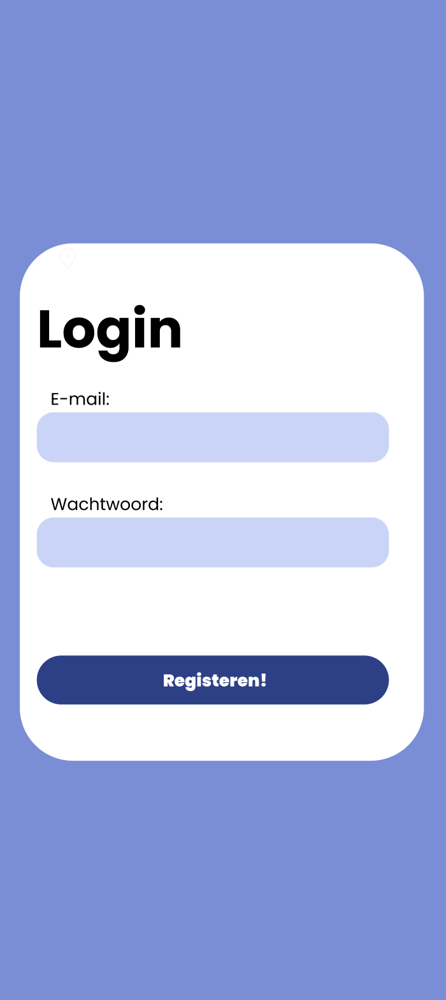
 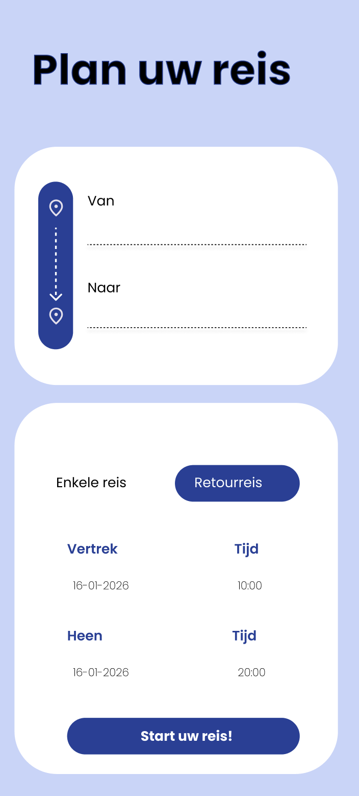
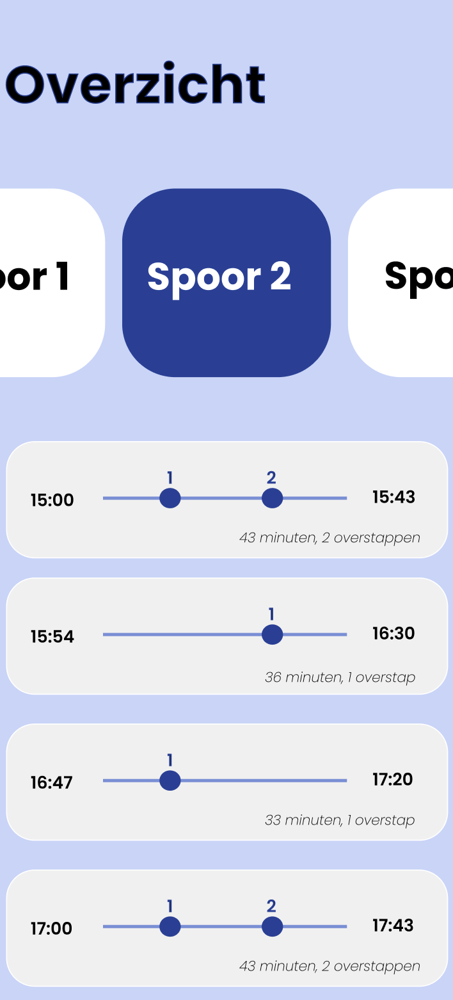
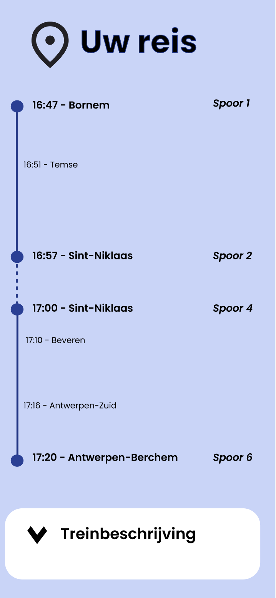
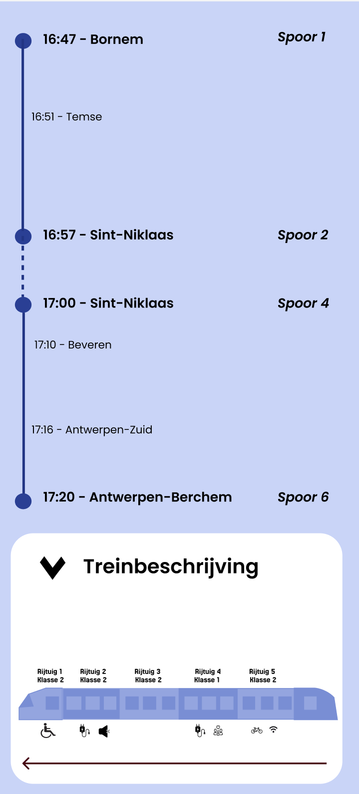
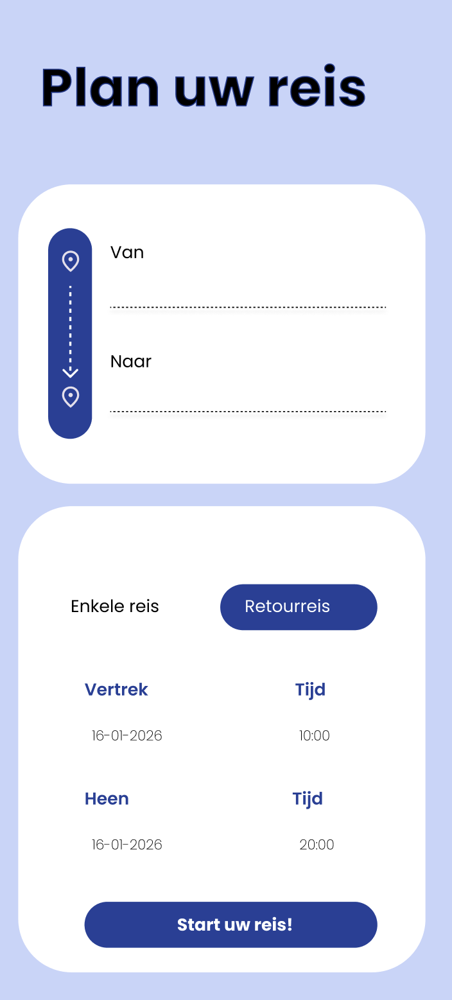
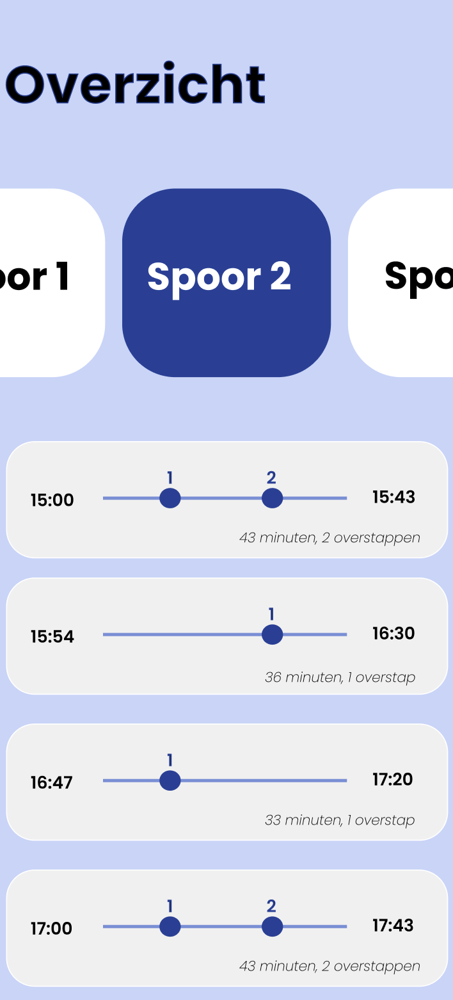
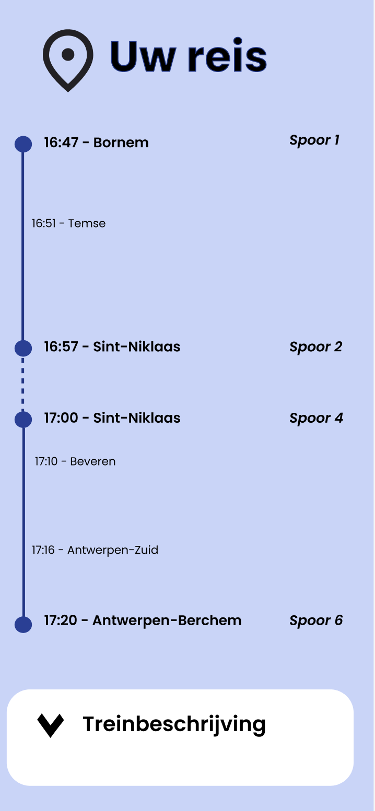
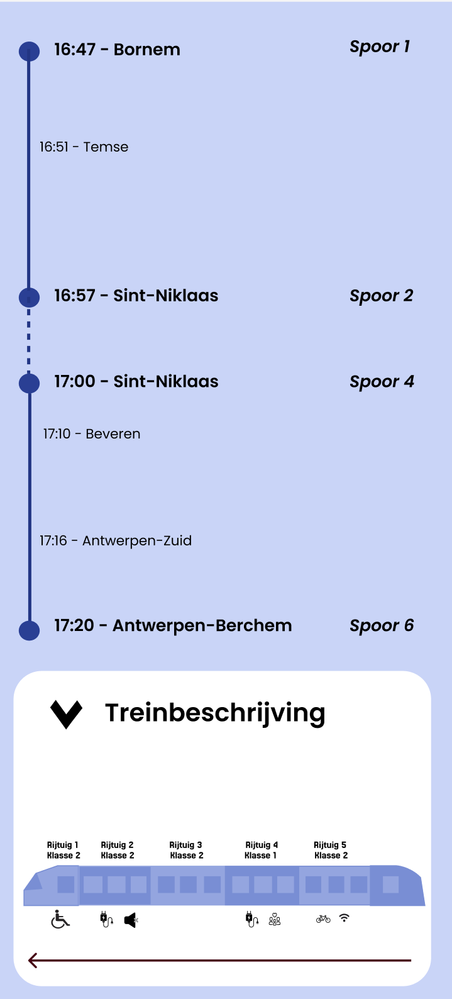
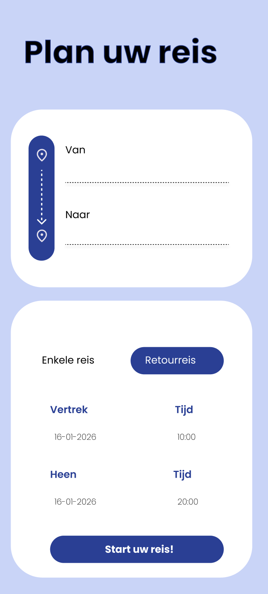
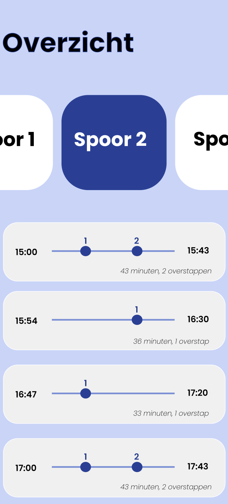
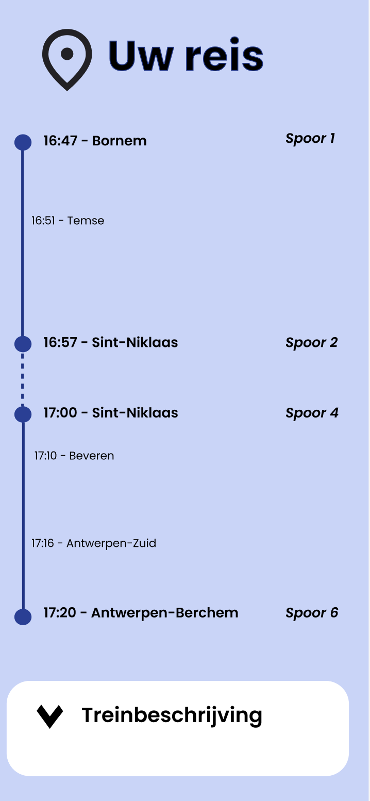
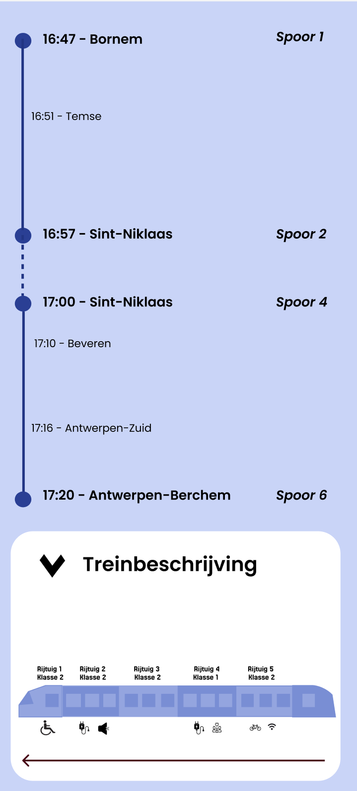